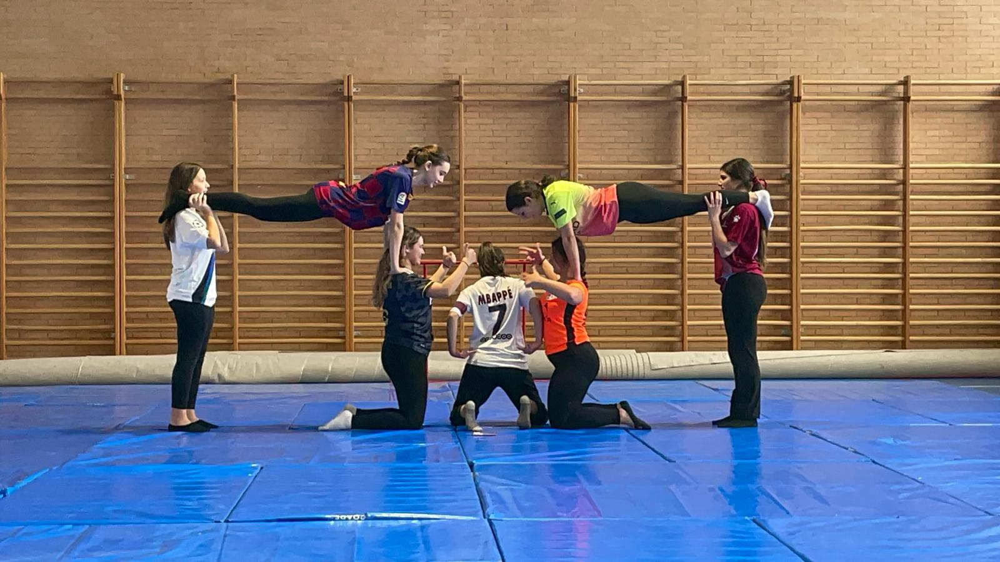
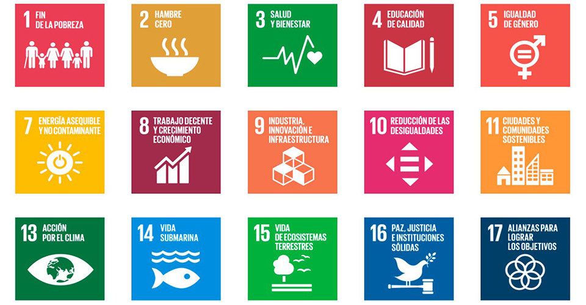

Proyecto de Expresión Corporal
Durante las próximas semanas vamos a trabajar la Expresión Corporal. El proyecto que vais a reaIizar en esta unidad va a consistir en crear y elaborar un montaje de expresión corporal que deberéis exponer en clase y grabar para su posterior edición de video. Todo esto lo haréis en grupo, y apoyándoos en los recursos y herramientas digitales que tenéis a vuestro alcance.

Debéis tener en cuenta que vuestro proyecto tendrá un hilo conductor del mismo, que establezca una temática apropiada, y que en todo momento no pierda de vista la importancia del mensaje que pretendéis transmitir. Este hilo conductor de vuestro Montaje, la temática, debe estar basado en uno o varios de los 17 ODS (Objetivos de Desarrollo Sostenible) que ya conocéis y hemos tratado en clases anteriores. No obstante, y para que los recordéis, os dejo por aquí esta imagen.
